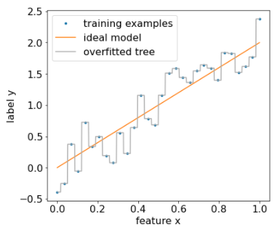

library(tidyverse)
library(tidymodels)6 Árboles de decisión y Random Forest
6.1 Árboles de decisión
6.1.1 Definición
Un árbol de decisión es un modelo predictivo que representa un conjunto de reglas “si… entonces…” organizadas en forma de árbol. Parte de un nodo raíz (todos los datos) y, en cada nodo interno, divide los datos según el valor de una variable predictora para reducir la impureza (en regresión: varianza/MSE).
El proceso continúa hasta cumplir criterios de parada (profundidad, mínimo de casos, complejidad) y las hojas entregan la predicción final: promedio de la variable objetivo (regresión).
También se puede aplicar a clasificación. Eso lo veremos más adelante!
6.1.2 Ventajas y desventajas
Ventajas:
Interpretables: reglas “si… entonces…” fáciles de explicar.
Capturan no linealidades e interacciones sin ingeniería previa.
Poco preprocesamiento: no requieren normalizar; toleran outliers mejor que modelos lineales.
Mixtos: funcionan con variables numéricas y categóricas.
Rápidos de entrenar y útiles para generar hipótesis/segmentaciones.
Desventajas:
Sobreajustan e inestables: pequeños cambios en los datos alteran mucho el árbol (alta varianza).
Fronteras en “escalera” y predicciones por tramos; no extrapolan bien.
Sesgo en splits hacia variables con muchos niveles; cuidado al interpretar “importancia”.
6.1.3 Ejemplo simple de partición
Imagina que tenemos la siguiente data:
df <- tibble::tibble(
id = 1:10,
horas_estudio = c(1, 2, 2, 3, 3, 5, 4, 6, 2, 5),
ingreso = c(22, 35, 33, 40, 45, 35, 40, 21, 28, 24)
) Lo visualizamos en un gráfico de dispersión.
df |>
ggplot()+
aes(x=horas_estudio, y=ingreso)+
geom_point()Generamos una primera partición:
df |>
ggplot()+
aes(x=horas_estudio, y=ingreso)+
geom_point()+
geom_vline(xintercept = 1.5, linetype = "dashed")Dentro de cada una de estas secciones vamos a calcular un indicador, el cual es el RMSE a la media de cada uno.
Para el caso de la primera partición, como el error es 0, al tener sólo una observación, su RMSE será 0.
Para el caso de la segunda partición, calculamos los errores, los elevamos al cuadrado, los sumamos y sacamos promedio:
df |>
filter(horas_estudio>=1.5) |>
summarise(mean(ingreso))# A tibble: 1 × 1
`mean(ingreso)`
<dbl>
1 33.4df |>
filter(horas_estudio>=1.5) |>
mutate(error_ingreso=ingreso-mean(ingreso)) |> # calculamos el error
mutate(error_ingreso_al2=error_ingreso**2) |>
summarise(RMSE=sum(error_ingreso_al2)/n()) |>
mutate(RMSE*0.9)# A tibble: 1 × 2
RMSE `RMSE * 0.9`
<dbl> <dbl>
1 55.4 49.8Ahora, conociendo el grado de dispersión de cada una de las agrupaciones, podemos encontrar un puntaje para el umbral seleccionado.
Este umbral tendrá un puntaje que será la suma de la dispersión de cada sección. En este caso: 49.8
Ya tenemos una métrica para evaluar qué tan buena ha sido esta partición tomando como punto de corte 1.5. Y cómo serán las demás particiones posibles?
Una vez tengamos la función de costo de todas las particiones posibles, el modelo escogerá aquella en la cual el costo será el menor. Ok, ya tenemos el primer nodo.
6.1.4 Aplicación con una predictora numérica
Utilizamos nuestra base de datos:
library(tidyverse)
library(readxl)
library(tidymodels)
data <- read_xlsx("data/AML_2.xlsx")
data<- data |>
filter(!is.na(aml_index))set.seed(2025)
index <- initial_split(data)
training_data <- training(index)
testing_data <- testing(index) mi_receta_arbol <- recipe(aml_index ~ pbi_pc, data = training_data)arbol <- decision_tree(min_n=5) |>
set_engine("rpart") |>
set_mode("regression")wf_arbol <- workflow() |>
add_recipe(mi_receta_arbol) |>
add_model(arbol)fit_arbol <- wf_arbol |>
fit(training_data)
fit_arbol══ Workflow [trained] ══════════════════════════════════════════════════════════
Preprocessor: Recipe
Model: decision_tree()
── Preprocessor ────────────────────────────────────────────────────────────────
0 Recipe Steps
── Model ───────────────────────────────────────────────────────────────────────
n= 59
node), split, n, deviance, yval
* denotes terminal node
1) root 59 66.593350 5.266441
2) pbi_pc>=3813.495 39 18.884070 4.723333
4) pbi_pc>=15749.22 15 3.088373 4.074667
8) pbi_pc>=54674.97 3 0.706400 3.620000 *
9) pbi_pc< 54674.97 12 1.606767 4.188333 *
5) pbi_pc< 15749.22 24 5.539462 5.128750 *
3) pbi_pc< 3813.495 20 13.773500 6.325500
6) pbi_pc>=1118.465 11 4.157018 5.922727 *
7) pbi_pc< 1118.465 9 5.650956 6.817778
14) pbi_pc>=553.69 7 4.194143 6.627143
28) pbi_pc< 735.42 2 0.605000 6.090000 *
29) pbi_pc>=735.42 5 2.781280 6.842000
58) pbi_pc>=823.395 3 0.673400 6.530000 *
59) pbi_pc< 823.395 2 1.377800 7.310000 *
15) pbi_pc< 553.69 2 0.312050 7.485000 *El resultado del modelo lo podemos visualizar con:
library(rpart.plot)Cargando paquete requerido: rpart
Adjuntando el paquete: 'rpart'The following object is masked from 'package:dials':
prunefit_arbol |>
extract_fit_engine() |>
rpart.plot()Warning: Cannot retrieve the data used to build the model (model.frame: objeto '..y' no encontrado).
To silence this warning:
Call rpart.plot with roundint=FALSE,
or rebuild the rpart model with model=TRUE.En este caso, el primer número de cada recuadro es el valor promedio de y (aml_index) en cada sección. Luego aparece el promedio del nodo original que se va a tal o cual nodo.
6.1.5 Aplicación con dos predictoras numéricas
mi_receta_arbol <- recipe(aml_index ~ pbi_pc + rule_of_law, data = training_data)
arbol <- decision_tree() |>
set_engine("rpart") |>
set_mode("regression")
wf_arbol <- workflow() |>
add_recipe(mi_receta_arbol) |>
add_model(arbol)
fit_arbol <- wf_arbol |>
fit(training_data)
fit_arbol══ Workflow [trained] ══════════════════════════════════════════════════════════
Preprocessor: Recipe
Model: decision_tree()
── Preprocessor ────────────────────────────────────────────────────────────────
0 Recipe Steps
── Model ───────────────────────────────────────────────────────────────────────
n= 59
node), split, n, deviance, yval
* denotes terminal node
1) root 59 66.593350 5.266441
2) pbi_pc>=3813.495 39 18.884070 4.723333
4) pbi_pc>=15749.22 15 3.088373 4.074667 *
5) pbi_pc< 15749.22 24 5.539462 5.128750
10) rule_of_law>=0.5721363 7 0.404600 4.780000 *
11) rule_of_law< 0.5721363 17 3.932906 5.272353 *
3) pbi_pc< 3813.495 20 13.773500 6.325500
6) pbi_pc>=1118.465 11 4.157018 5.922727 *
7) pbi_pc< 1118.465 9 5.650956 6.817778 *El resultado del modelo lo podemos visualizar con:
library(rpart.plot)
fit_arbol |>
extract_fit_engine() |>
rpart.plot()Warning: Cannot retrieve the data used to build the model (model.frame: objeto '..y' no encontrado).
To silence this warning:
Call rpart.plot with roundint=FALSE,
or rebuild the rpart model with model=TRUE.6.1.6 Aplicación con dos predictoras numéricas y un factor
mi_receta_arbol <- recipe(aml_index ~ pbi_pc +
rule_of_law+
continente,
data = training_data)
arbol <- decision_tree() |>
set_engine("rpart") |>
set_mode("regression")
wf_arbol <- workflow() |>
add_recipe(mi_receta_arbol) |>
add_model(arbol)
fit_arbol <- wf_arbol |>
fit(training_data)
fit_arbol══ Workflow [trained] ══════════════════════════════════════════════════════════
Preprocessor: Recipe
Model: decision_tree()
── Preprocessor ────────────────────────────────────────────────────────────────
0 Recipe Steps
── Model ───────────────────────────────────────────────────────────────────────
n= 59
node), split, n, deviance, yval
* denotes terminal node
1) root 59 66.5933500 5.266441
2) pbi_pc>=3813.495 39 18.8840700 4.723333
4) pbi_pc>=15749.22 15 3.0883730 4.074667 *
5) pbi_pc< 15749.22 24 5.5394620 5.128750
10) rule_of_law>=0.5721363 7 0.4046000 4.780000 *
11) rule_of_law< 0.5721363 17 3.9329060 5.272353 *
3) pbi_pc< 3813.495 20 13.7735000 6.325500
6) continente=Americas,Asia 7 0.9899714 5.704286 *
7) continente=Africa 13 8.6276000 6.660000 *Lo visualizamos:
fit_arbol |>
extract_fit_engine() |>
rpart.plot()Warning: Cannot retrieve the data used to build the model (model.frame: objeto '..y' no encontrado).
To silence this warning:
Call rpart.plot with roundint=FALSE,
or rebuild the rpart model with model=TRUE.6.1.7 Importancia de las variables
La importancia de variables es un ranking que indica cuánto aporta cada predictor a las mejoras de predicción del árbol.
Para qué sirve: priorizar predictores, simplificar cuestionarios/inputs (coste), detectar variables inútiles o fugas de información, y comunicar qué factores “pesan” más en términos predictivos.
library(vip)
Adjuntando el paquete: 'vip'The following object is masked from 'package:utils':
vifit_arbol |>
extract_fit_engine() |>
vip()6.1.8 Comparación RL y Árbol de Decisión
Considerando las mismas variables:
mi_receta <- recipe(aml_index ~ pbi_pc + rule_of_law+ continente,
data = training_data)¿Cuál modelo logrará la mejor predicción, la regresión lineal o el árbol de decisión?
arbol <- decision_tree() |>
set_engine("rpart") |>
set_mode("regression")
wf_arbol <- workflow() |>
add_recipe(mi_receta_arbol) |>
add_model(arbol)
fit_arbol <- wf_arbol |>
fit(training_data)
fit_arbol |>
predict(testing_data) |>
bind_cols(valor_real=testing_data$aml_index) |>
rmse(truth = valor_real,
estimate = .pred)# A tibble: 1 × 3
.metric .estimator .estimate
<chr> <chr> <dbl>
1 rmse standard 0.602En este caso, la regresión lineal ha probado seguir siendo la mejor opción (RMSE = 0.56). No obstante, se encuentran muy cerca en cuanto a su rendimiento.
6.1.9 Problema!
Sobreajuste (overfitting): Crecen hasta “memorizar” el ruido si no se limitan.
Alta varianza / inestabilidad: Pequeños cambios en los datos pueden cambiar mucho la estructura del árbol.
SOLUCIÓN: RANDOM FOREST!

6.2 Random Forest
6.2.1 Definición
Random Forest es un modelo de ensamble que combina muchos árboles de decisión para mejorar la capacidad de generalización. Cada árbol se entrena sobre una muestra bootstrap (con reemplazo) del conjunto de datos y, en cada división, considera solo un subconjunto aleatorio de predictores (mtry).
En regresión, la predicción final es el promedio de los árboles. Esta aleatoriedad + agregación reduce la varianza del árbol individual y hace al modelo robusto sin requerir preprocesamientos complejos.
6.2.2 Ventajas y desventajas
Ventajas:
Captura no linealidades e interacciones automáticamente.
Suele rendir bien “out-of-the-box” y es estable frente a ruido.
No requiere normalización de variables; funciona con muchas x.
Proporciona importancia de variables.
Desventajas:
Menor interpretabilidad que un árbol único.
Puede ser pesado en memoria/tiempo con muchos árboles o datos muy grandes.
6.2.3 Aplicación con tidymodels
Vamos con la misma receta del árbol:
mi_receta <- recipe(aml_index ~ pbi_pc + rule_of_law+ continente,
data = training_data)Aplicamos el workflow utilizando la función rand_forest():
bosque_model <- rand_forest(trees = 1000, min_n = 5) |>
set_engine("ranger", importance = "permutation") |>
set_mode("regression")Iniciamos el workflow():
bosque_wf <- workflow() |>
add_recipe(mi_receta) |>
add_model(bosque_model)Ahora fiteamos el modelo y calculamos el RMSE.
fit_bosque <- bosque_wf |>
fit(training_data)6.2.4 Comparación RL, DT, RF
Excelente!!! Ahora conseguir una mejor performance predictiva!!
fit_bosque |>
predict(testing_data) |>
bind_cols(valor_real=testing_data$aml_index) |>
rmse(truth = valor_real,
estimate = .pred)# A tibble: 1 × 3
.metric .estimator .estimate
<chr> <chr> <dbl>
1 rmse standard 0.513También podemos comprobar la importancia de las variables:
fit_bosque |>
extract_fit_engine() |>
vip()